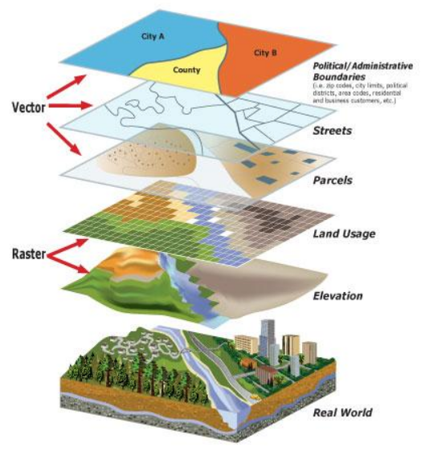
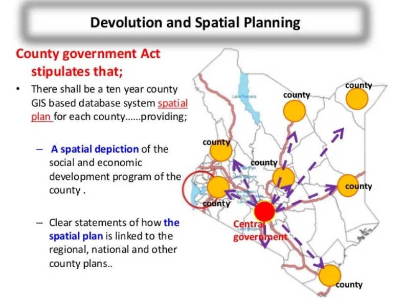
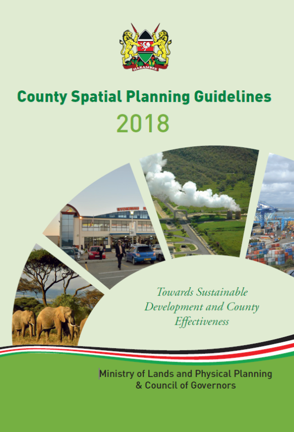
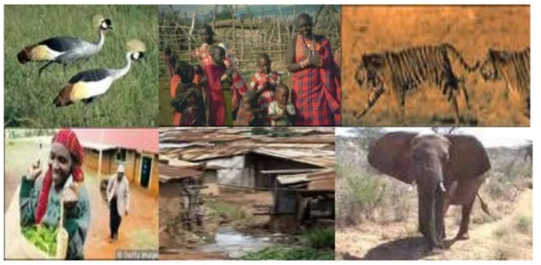

County Spatial Planning
County Spatial Planning in Kenya is a critical component of the nation’s development strategy. In accordance with the Constitution of Kenya 2010 and the County Governments Act 2012, spatial planning at the county level seeks to promote sustainable and organized growth in each of Kenya’s 47 counties. This article delves into the significance, process, and challenges that come with spatial planning in the Kenyan context.
Significance of County Spatial Planning
County spatial planning is significant for several reasons:
Balanced Development: It ensures that the growth of urban, peri-urban, and rural areas is harmonized, reducing regional disparities.
Resource Management: Effective planning helps in the sustainable management of resources, including land, water, and minerals.
Infrastructure Development: It guides the implementation of infrastructure projects, ensuring they cater to present and future needs.
Environmental Conservation: Spatial plans incorporate environmental protection measures, helping counties address climate change and biodiversity loss.
County Spatial Planning Process
The spatial planning process in Kenya involves several stages:
Public Participation: Engaging local communities is foundational to the planning process to ensure the plans reflect the needs and aspirations of the residents.
Situation Analysis: County planners carry out comprehensive studies to understand the current state of resources, infrastructure, and development patterns.
Vision Setting: The county government sets a long-term vision for what it hopes to achieve through spatial planning.
Policy Formulation: Based on the analysis and vision, specific policies are developed to guide land use, infrastructure development, and resource allocation.
Plan Preparation: A draft spatial plan is prepared, which includes maps and documents detailing the development strategies and land use proposals.
Approval and Implementation: The draft plan goes through a formal approval process, after which it is made available to the public. Implementation involves all county departments and relevant stakeholders.
Monitoring and Evaluation: Periodic assessments are conducted to ensure the spatial plan’s objectives are being met and to make necessary adjustments.

Challenges in County Spatial Planning
While county spatial planning is a potent tool for directing development, there are challenges:
Financial Constraints: Many counties face budgetary limitations that hinder effective planning and execution of development projects.
Technical Capacity: There is often a lack of skilled personnel to undertake comprehensive spatial planning at the county level.
Inter-county Coordination: Given that development issues often spill over county boundaries, there is a need for greater collaboration which sometimes is lacking.
Land Ownership Disputes: Conflicts over land ownership and use can complicate the planning process.
Implementation Gaps: Even with a robust plan, implementing policies and projects can be challenging due to administrative hurdles and resistance to change.
Rapid Urbanization: The pressure of urbanization often outpaces the planning capacity of counties, leading to informal settlements and uncontrolled development.
The Path Forward
For county spatial planning to achieve its desired impact, concerted efforts must be made to overcome these challenges. This involves:
Capacity Building: Training and equipping planners with the necessary tools and knowledge to manage complex spatial issues.
Public-Private Partnerships: Leveraging private sector resources and expertise can bolster planning efforts.
Legal and Policy Support: Ensuring that there is a supportive legal framework that governs land use and property rights.
Community Involvement: Continuous engagement with the community for feedback and support for planned initiatives.
Integrated Planning: Harmonizing plans across counties and sectors to create a cohesive approach to national development.
In conclusion, county spatial planning is essential in guiding Kenya towards sustainable development. By addressing current limitations and harnessing the full potential of this facet of governance, Kenya can pave the way for organized growth, equitable resource distribution, and a prosperous future for all its citizens.
Bridging the Gap: How County Spatial Planning Helps Reduce Regional Disparities in Kenya

County Spatial Planning in Kenya plays a pivotal role in addressing regional disparities, a significant challenge given the country’s diverse geography and socio-economic landscape. With a history of centralized development policies that have favored some regions over others, Kenya’s devolved system of government has made it imperative to strategize at the county level to ensure more equitable growth across the nation. Here’s how spatial planning at the county level is being harnessed to bridge the development divide.
Inclusive Development Strategies:
Spatial planning allows for the drafting of targeted development strategies that take into account the unique strengths and needs of each county. By focusing on inclusive development, counties can formulate plans that foster growth in lagging areas, ultimately reducing the gap between more and less developed regions.Resource Distribution:
One of the central aims of county spatial planning is the rational allocation of resources. Counties can prioritize infrastructure investments, such as roads, healthcare, and education, in underserved areas to promote equal access to basic services and economic opportunities.Economic Diversification:
Spatial planning enables counties to identify and develop diverse economic activities based on their local resources and comparative advantages. By promoting various sectors such as agriculture, manufacturing, tourism, or technology within different regions, counties can create jobs and reduce reliance on a single economic activity or resource, which often leads to uneven development.Land Use Planning:
Through spatial planning, counties can implement land use policies that encourage equitable growth. This includes zoning regulations that protect agricultural land, promote affordable housing, and ensure that investment is directed towards regions that have historically been marginalized or overlooked.Enhanced Infrastructure Connectivity:
Counties can plan and develop transportation and communication networks that better integrate rural and urban areas. Improved connectivity facilitates the flow of goods, services, and information, thereby narrowing the development gap between regions.Environmental Management:
Proper spatial planning ensures that development is sustainable and that environmental resources are managed equitably. By protecting watersheds, forests, and biodiversity, counties can prevent environmental degradation that disproportionately affects remote and poorer regions.Public Participation:
County spatial planning often involves community input, allowing residents from all parts of the county to voice their concerns and preferences. This inclusive approach ensures that minority and underrepresented groups have a say in the development process, leading to more balanced regional growth.Collaborative Frameworks:
Inter-county collaboration is one of the key benefits of spatial planning, as it enables neighboring counties to work together on cross-boundary issues such as trade, infrastructure, and resource management, leading to a more unified approach to tackling regional disparities.Monitoring and Accountability:
County governments are responsible for monitoring spatial plans and ensuring they are implemented effectively, with a focus on reducing inequality. This level of local accountability ensures that development efforts are closely tracked and evaluated to address any persisting disparities.
In conclusion, county spatial planning serves as a crucial mechanism for reducing regional disparities in Kenya. Through targeted, inclusive, and sustainable development strategies, each county has the potential to uplift neglected areas and contribute to a more balanced national development landscape. The journey to reducing regional disparities through spatial planning is an ongoing process, requiring continued efforts, innovation, and commitment from both county governments and their constituents.
Fostering Economic Diversification through County Spatial Planning in Kenya

County spatial planning in Kenya is not just about organizing or allocating land for various uses; it’s a strategic tool that significantly contributes to the economic diversification of the country. Given Kenya’s rich cultural diversity, ecological variety, and uneven distribution of resources, spatial planning at the county level has emerged as a vital approach to harnessing localized strengths and reducing economic vulnerabilities. Here’s how county spatial planning is spearheading economic diversification in Kenya:
Identification of Local Economic Opportunities:
Spatial planning helps in identifying unique local resources and opportunities that can be harnessed for economic development. For instance, a county with vast mineral resources can focus on developing its mining sector, while another with fertile lands may prioritize agriculture or agro-processing industries. This utilization of local assets encourages a diversified economic base across different counties.Supporting Sector-specific Development:
Through spatial planning, counties can allocate land and resources to support specific sectors that have the potential for growth and diversification. For example, land zoning can encourage the development of industrial parks, technology hubs, or tourist attractions, depending on a county’s strategic plans and comparative advantages. This targeted support can stimulate new economic activities and reduce over-dependence on traditional sectors.Infrastructure Development for Economic Support:
Strategic infrastructure development is a key aspect of county spatial planning. By prioritizing investments in roads, energy, water supply, and ICT, counties can create an enabling environment for diverse economic activities to flourish. Improved infrastructure also attracts domestic and foreign investment into new sectors, further driving economic diversification.Promoting Sustainable Use of Natural Resources:
Spatial planning includes the management and sustainable use of natural resources. By crafting policies that protect the environment while allowing for economic exploitation, counties can diversify their economies through sustainable tourism, green energy, and conservation projects. This approach ensures long-term economic resilience and sustainability.Enhancing Urban-Rural Linkages:
County spatial planning fosters better integration between urban and rural areas. By promoting agro-based industries near agricultural zones and enhancing market access for rural producers, spatial planning supports the development of a more diversified rural economy. These urban-rural linkages are crucial for broadening the economic base of both rural and urban centers.Creating Employment Opportunities:
Economic diversification through spatial planning creates various employment opportunities in new and emerging sectors. This not only helps to reduce unemployment but also curbs urban migration by providing viable economic opportunities in less developed areas. This balanced growth helps to alleviate economic disparities across counties.Encouraging Investment and Innovation:
By showcasing the economic potential of different regions through well-thought-out spatial plans, counties can attract investment from both private and government sectors. Additionally, the development of sector-specific zones, such as technology or industrial parks, can serve as incubation centers for innovation and entrepreneurship, further diversifying the economy.
Through these strategies, county spatial planning in Kenya serves as a foundational element in fostering economic diversification across the nation. It allows for the tailored development of regions based on their unique strengths and opportunities, contributing to more robust and resilient economic growth. By continuing to leverage spatial planning for economic diversification, Kenya can ensure a more equitable and prosperous future for all its citizens.
Harnessing Unique Local Resources for Economic Development via County Spatial Planning

County spatial planning plays a pivotal role in economic development by identifying and utilizing unique local resources. This strategic approach enables counties to tap into their inherent strengths, fostering growth and diversification. Here’s a detailed look at how county spatial planning effectively identifies and capitalizes on unique local resources for economic development:
Resource Mapping and Assessment:
The initial step in county spatial planning involves detailed mapping and assessment of available local resources. This includes natural resources (such as minerals, forests, and water bodies), cultural assets (heritage sites, cultural practices), and human resources (labor force skills and knowledge). These assessments are crucial for understanding the economic potential embedded within a region.Stakeholder Engagement and Needs Analysis:
County planning authorities engage with local communities, businesses, and stakeholders to gather insights and understand the needs of the area. This participatory approach ensures that the spatial planning process is inclusive and reflects the aspirations of local residents. Stakeholder engagement helps in pinpointing opportunities for leveraging local resources in a way that benefits the community at large.Strategic Zoning and Land Use Planning:
Based on the resource assessment and community inputs, counties proceed to zone areas for specific uses that align with their unique strengths. For example, areas with rich biodiversity might be zoned for eco-tourism, while regions with fertile land may be allocated for agricultural development. Strategic zoning helps in safeguarding valuable resources while providing a clear framework for their sustainable and economically viable utilization.Infrastructure Development Aligned with Local Strengths:
Counties plan and invest in infrastructure development that supports the economic exploitation of local resources. For instance, if a county has a significant agricultural output, investments might be directed towards improving road networks for better market access, establishing agro-processing facilities, and enhancing water supply for irrigation. This targeted infrastructure development serves as the backbone for economic activities centered around local resources.Creating Economic Clusters and Value Chains:
Spatial planning facilitates the development of economic clusters by encouraging businesses and industries related to a particular local resource to set up operations in proximity. This clustering effect can lead to the development of entire value chains around a resource, from raw material extraction or production to processing, marketing, and exports. It fosters an ecosystem of businesses that can drive economic growth and innovation.Policy Formulation and Incentivization:
Counties formulate policies and provide incentives to attract investment into sectors that capitalize on local resources. These can include tax breaks, subsidies for resource-based industries, and support for research and development activities. Such policies create a favorable environment for businesses to invest in local resources, leading to job creation and economic diversification.Environmental Protection and Sustainability:
An integral component of utilizing local resources for economic development is ensuring environmental sustainability. Spatial planning incorporates environmental conservation measures to protect resources from overexploitation and degradation. Sustainable use of local resources guarantees their availability for future generations while supporting economic growth.
Through these mechanisms, county spatial planning in Kenya and elsewhere identifies and uses unique local resources as catalysts for economic development. By strategically leveraging these resources, counties can foster a sustainable, diversified, and resilient economic landscape that benefits the entire community.